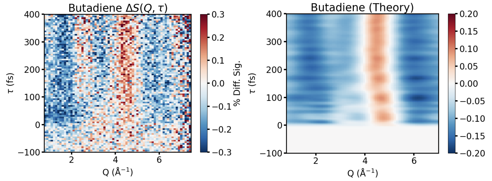

        <section>
          <h3 style="margin: 0 0 0.3em;">Butadiene — Comparison with Nonadiabatic Dynamics</h3>
          <div style="position: relative; width: 106%; margin-left: -3%;">
            
            <!-- Overlay aligned to the figure's data axes (viewBox = image px).
                 Left panel:  x = 132.5 + 104.75*Q,  y = 596 - 1.3225*tau
                 Right panel: x = 1276  + 117*Q,     y = 598 - 1.3325*tau -->
            <svg viewBox="0 0 2352 866" preserveAspectRatio="none"
                 style="position: absolute; inset: 0; width: 100%; height: 100%; pointer-events: none; overflow: visible;">
              <defs>
                <marker id="btcArrow" viewBox="0 0 10 10" refX="8.5" refY="5"
                        markerWidth="6" markerHeight="6" orient="auto-start-reverse">
                  <path d="M0,0 L10,5 L0,10 z" fill="#111111"/>
                </marker>
              </defs>

              <!-- Click 1: rising-feature arrow on the experimental panel,
                   (Q=2, tau=0) -> (Q=3.5, tau=100) -->
              <g class="fragment" data-fragment-index="0" stroke-linecap="round">
                <line x1="342" y1="596" x2="499" y2="464" stroke="#ffffff" stroke-width="15"/>
                <line x1="342" y1="596" x2="499" y2="464" stroke="#111111" stroke-width="7"
                      marker-end="url(#btcArrow)"/>
              </g>

              <!-- Click 2: Q = 2 and 3.2 guide lines over tau = 100-400 fs,
                   on both the experimental (left) and simulated (right) panels -->
              <g class="fragment" data-fragment-index="1" stroke-linecap="round">
                <line x1="342"  y1="464" x2="342"  y2="67" stroke="#ffffff" stroke-width="13"/>
                <line x1="468"  y1="464" x2="468"  y2="67" stroke="#ffffff" stroke-width="13"/>
                <line x1="1451" y1="465" x2="1451" y2="65" stroke="#ffffff" stroke-width="13"/>
                <line x1="1591" y1="465" x2="1591" y2="65" stroke="#ffffff" stroke-width="13"/>
                <line x1="342"  y1="464" x2="342"  y2="67" stroke="#111111" stroke-width="6"/>
                <line x1="468"  y1="464" x2="468"  y2="67" stroke="#111111" stroke-width="6"/>
                <line x1="1451" y1="465" x2="1451" y2="65" stroke="#111111" stroke-width="6"/>
                <line x1="1591" y1="465" x2="1591" y2="65" stroke="#111111" stroke-width="6"/>
              </g>
            </svg>
          </div>
        </section>
